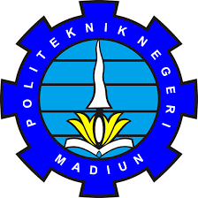

 |
KEMENTERIAN PENDIDIKAN, KEBUDAYAAN, RISET, DAN TEKNOLOGI POLITEKNIK NEGERI MADIUN Jalan Serayu Nomor 84 Madiun Kode Pos 63133. Telepon +62 351 452970 Faksimile +62 351 452960 Laman: www.pnm.ac.id. Surel: sekretariat@pnm.ac.id |
| Nama Mahasiswa | : ARINDA MARDIANTI | Jurusan | : Teknik |
| NIM | : 253307007 | Program Studi | : Teknologi Informasi |
| No | Kode MK | Mata Kuliah | SKS | Kelas | Dosen Pengampu |
|---|---|---|---|---|---|
| 1 | MKU2201 | Agama Islam | 2 | 2A | Dr. Nanik Nurhayati, S.Ag., M.Pd. |
| 2 | TI22202 | Komputasi Matematika | 2 | 2A | Tri Septianto, S.Kom., M.Kom |
| 3 | TI22203 | Manajemen Proyek Teknologi Informasi | 2 | 2A | Lutfiyah Dwi Setya, S.Kom., M.Kom |
| 4 | TI22204 | Sistem Komunikasi Optic | 3 | 2A | Muhammad Syaeful Fajar, S.Pd., M.Kom |
| 5 | TI22205 | Pemrograman Berbasis Obyek | 3 | 2A | Tri Lestarining, S.Kom, M.Kom |
| 6 | TI22206 | Desain & Pemrograman Web | 3 | 2A | Angger Binuko Paksi, M.Kom |
| 7 | TI22207 | Sistem Operasi | 3 | 2A | Hery Maryanto, S.Pd., M.Kom |
| 8 | TI22208 | UI/UX Design | 2 | 2A | Rahmania Kumalasari, S.Kom., M.Kom |
| Jumlah | 20 | ||||
| Mahasiswa, (Arinda Mardianti) |
Madiun, 1 Februari 2026 Dosen Pembina Akademik, Rahmania Kumalasari, S.Kom, M.Kom |